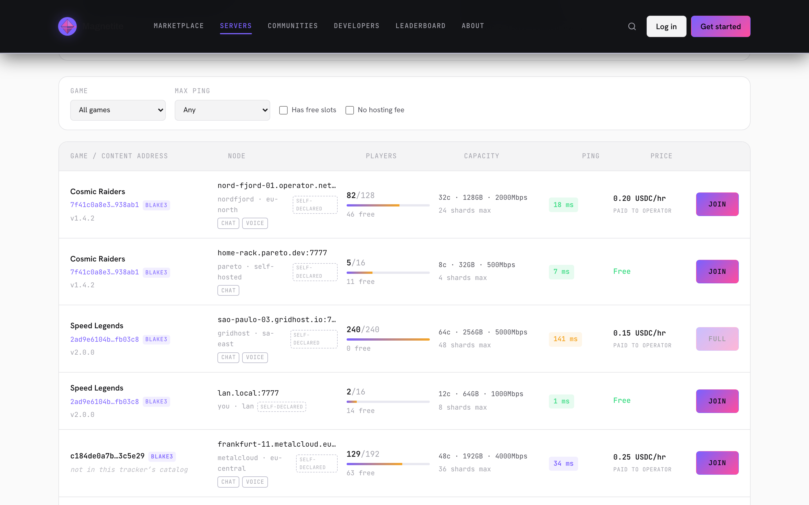
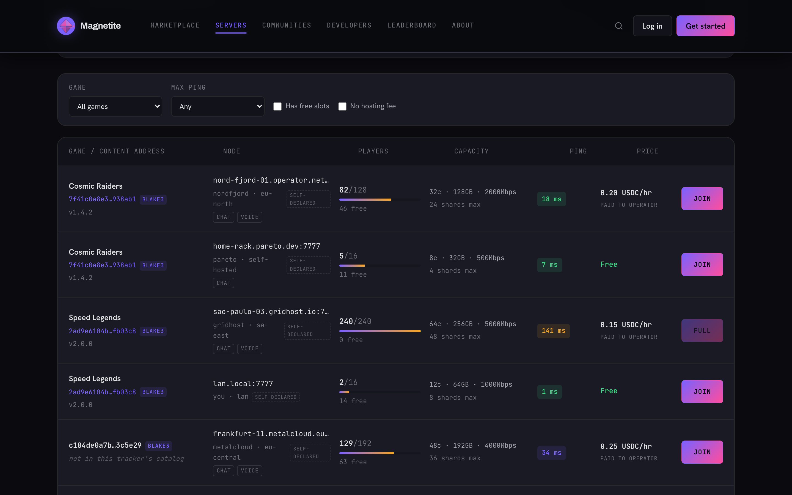
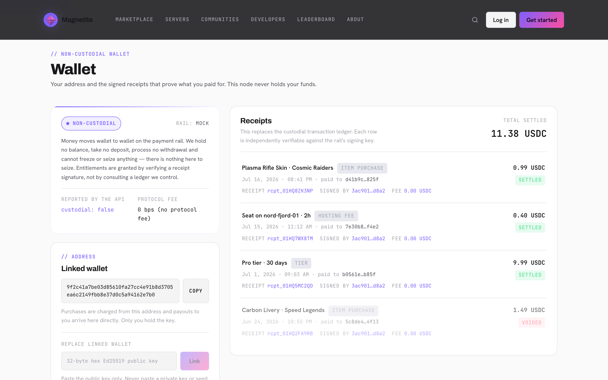
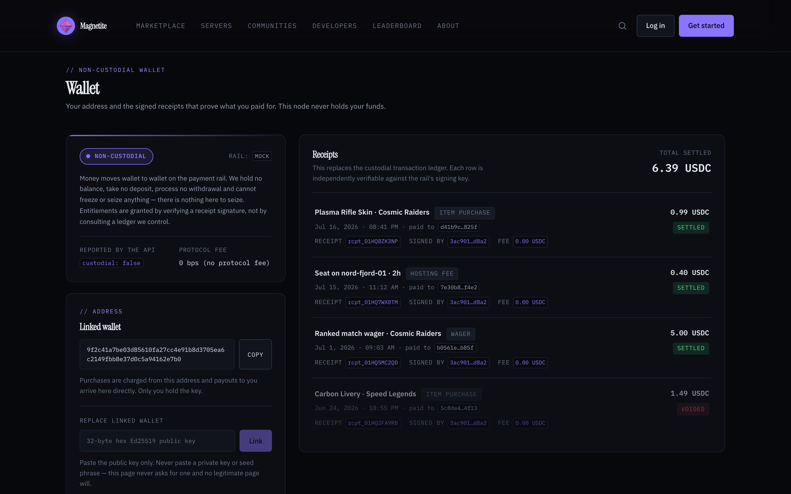
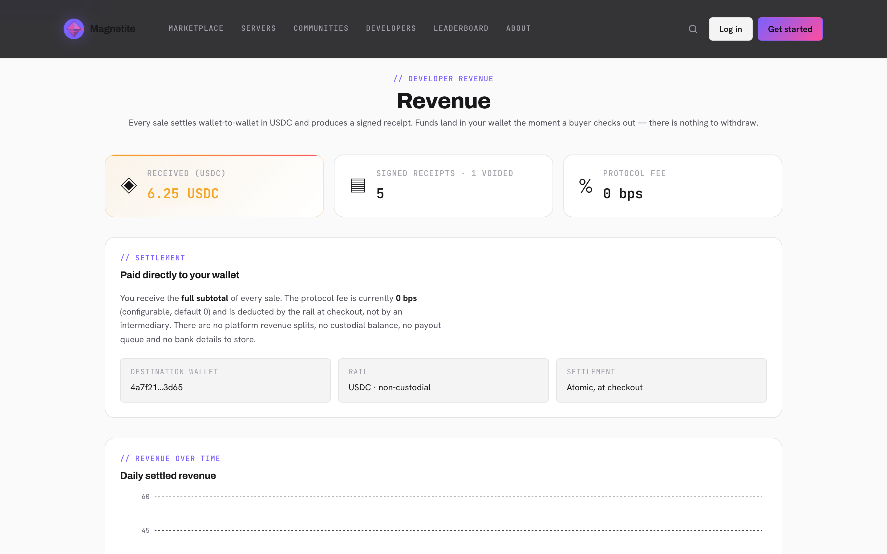
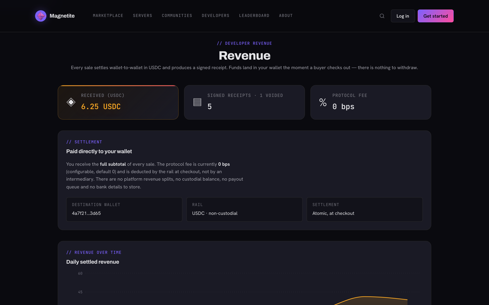
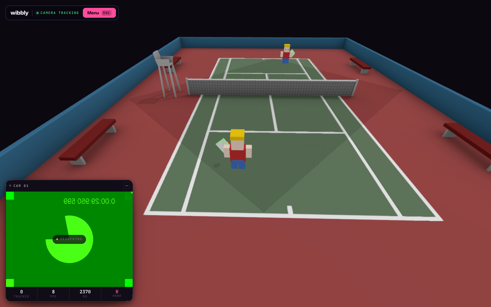

Anyone can re-run the match and check the result.
Clients send inputs, never state. A deterministic WASM sandbox steps the world. Every tick lands in a log that a stranger can re-simulate from scratch and compare.
magnetite is a Rust games platform whose one real asset is that its simulation is reproducible. Cheating is not something you detect by heuristics — it is something you prove from the record. Around that core sit seven seams, each with a working offline default, so no provider is welded in. The project is being rebuilt around a no-central-cloud design, and this page keeps what runs today strictly apart from what is only written down.
A proof, not a promise.
Most anti-cheat asks a server to guess whether a player is lying. magnetite makes the match reproducible instead, so a third party can re-run it and compare hashes. Same state, same ordered commands, same tick, same seed — same result, on any machine.
verify_replay does.Inputs, never state
A client can only ask. The host validates the request and steps the world itself, so a modified client cannot assert a position, a hit or a score — it can only send commands the host was always free to reject.
The same result anywhere
Game logic compiles to WASM and runs under a sandbox with a fuel budget, a memory cap and an epoch interrupt — with no wall clock and no OS randomness reachable from the guest. Those absences are the point: they are what make a log checkable at all.
Component by component.
Audited against the tree, not against the pitch. DECENTRALIZATION.md is the authority on what is intended; this table is what exists.
| Capability | What it is | State |
|---|---|---|
| Authoritative simulation | AuthoritativeGame — deterministic validate / step in the SDK | Running |
| WASM sandbox | Wasmtime, wasm32-wasip1, fuel budget, memory cap, epoch interrupt; no OS randomness or wall clock in the guest | Running |
| Replay verification | ReplayLog + verify_replay — re-simulate from scratch and locate tampering | Running |
| Anti-cheat validators | Composable validator chain, trust scoring, warn / kick / ban escalation | Running |
| Zero-backend dev loop | magnetite dev — builds to wasm and serves a live match with no server at all | Running |
| Seam crate | Every seam a trait with a default needing no external service; CI runs fully offline | Running |
| Content-addressed games | Game id = hash of wasm + manifest; loaded by hash with BLAKE3 verification, fail-closed | Running |
| Capacity-elastic node | Node measures cores and RAM, derives its own shard and player budget — never a config constant | Running |
| Signed discovery | Self-advertised SessionAds, signed, leased and TTL-capped; LAN plus a dumb HTTP tracker | Running |
| Comms adapters | Matrix, Jitsi, LiveKit, Owncast and a builtin fallback behind one trait, in backend/src/comms | Running |
| Shard migration | Two-phase, epoch-fenced handoff; every partial failure resolves to “source keeps authority” | Running |
| Cluster membership | Deny-by-default operator allowlist of node public keys, checked at three separate points | Running |
| Session follow | Signed, single-use redirects move players with their shard; a forged redirect is inert | Running |
| Attested input wire | Signed events reach a live node over a real socket, rate-limited then verified then gated | Running |
| WAN / internet fleets | NAT traversal, relaying, real-world routing between operators who are not on one LAN | Not built |
| On-chain payment rail | Real USDC / L2 settlement behind PaymentRail. The shipped rail is a deterministic offline mock | Mock only |
| Multi-node Sharded | The full “Bucket D” topology rung above a single operator’s cluster | Specified |
| DHT discovery | Trackerless peer discovery behind the same Discovery trait | Specified |
| Gesture / sensor producer | Anything that produces an attested event — camera capture, pose model, vendor SDK | None in tree |
| Attested input consumer | A game that actually drains the accepted-event queue | None in tree |
| Pre-redesign backend | The central API and database from before the redesign. Fiat and custody are gone; parts remain | Partly removed |
Seven seams, seven working defaults.
Nothing in the game runtime, scheduler or payment path may name a provider-specific type — they see only these traits. Every seam ships a default that works with no network, no chain and no account, so the test suite runs fully offline and no external project is a hard dependency.
Identity
Identity is a keypair. Sign-a-challenge login over raw Ed25519, with the node able to mint short-lived audience- and scope-bound tokens, so one keypair login can enter external comms systems.
Default shipsNaming
Human names are a display layer; the substrate is always raw keys. Short-hash addressing by default, with an optional word-based key-name provider that adds zero dependencies and exists to prove the seam is genuinely swappable.
Default shipsBlobStore
Content addressing: the hash is the id. A game needs no registry row to be identified. Local and HTTP stores today; peer-to-peer distribution is a later adapter behind the same trait.
Default shipsDiscovery
A phonebook, never an authority. Nodes sign and lease their own advertisements, so a tracker can refuse forgeries without gaining any say over who may host what. LAN plus a dumb HTTP tracker anyone can run.
Default shipsCommsProvider
Chat, voice, video and streaming are adapters, not a product we build. Matrix, Jitsi, LiveKit and Owncast sit behind one trait, with the old in-house stack demoted to a fallback.
Adapters shipPaymentRail
Non-custodial by design: no balances, no payout queue, no custody. An entitlement is a signed receipt; hosting fees ride a channel; wagers settle from escrow. What actually ships is the deterministic offline mock — no chain is wired up, so nothing here moves real money today.
Mock rail onlyInputProvider
Input is split into two classes the compiler will not let you confuse. Deterministic input — keyboard, gamepad, bot — is replay-verifiable. Attested input — anything sensor-derived — is not, and never will be: the pixels are gone and were never authoritative.
The default provider is a deterministic queue that refuses attested events at runtime, so the class boundary is enforced rather than merely documented. A host-side gate screens attested events for rate, per-kind cooldown, human-reachable velocity, a confidence floor and monotonic sequence. Rejection means “not physically reachable”. Acceptance means nothing stronger than “not obviously impossible”.
A signature proves authorship, not truth. It stops one player forging events in another’s name and stops a relay editing them in flight. A cheater who signs their own fabricated numbers with their own genuine key passes every check — there is a test asserting exactly that, so the limit stays written down in code.
The wire ingress is real: wibbly — a camera-gesture game built on magnetite, where your webcam is the controller — signs pose-derived events and a live magnetite node accepts them. attested_ack comes back, pinned to a shared golden vector at both ends. That proves the seam carries traffic and nothing more: no game in either repo consumes those events yet. This is a validated transport, not gesture multiplayer. Play it in your browser →
The reference client.
Captured from the app in the repository against deterministic mock data. Every figure on these screens is fixture data — they show the shape of the interface, not a live network. Each is captioned with what it does not prove.
Server browser
Nodes advertise themselves; the client lists what the phonebook returned. Each row carries the game’s BLAKE3 content address, the node’s self-declared capacity — cores, RAM, bandwidth, shard ceiling — and its hosting price. Nothing here is a registry row: no central authority decided any of these servers may exist.


Non-custodial wallet
There are no balances to display, because the platform holds none. What the screen lists is receipts — each independently verifiable against the rail’s signing key, each granting an entitlement by signature rather than by a ledger row someone controls. The API reports custodial: false and the protocol fee defaults to 0 bps.


Developer revenue
The custodial surfaces this replaced — fiat balances, a payout queue, bank details, a withdrawal flow — were deleted in the redesign, not hidden. A sale settles wallet-to-wallet at checkout and produces a signed receipt, so there is nothing to withdraw and nothing for an operator to freeze.


wibbly — the wire ingress, live
wibbly is a camera-gesture game built on magnetite: the webcam is the controller, and pose-derived events are signed and carried over the real AttestedEvent wire route from Seam 07. This is that client mid-session, talking to a live magnetite node.


A game is a crate that implements one trait.
The dev loop needs no server, no account and no network. It is also the path most exercised in the repository.
# install the CLI from the repo $ cargo install --path magnetite-cli # scaffold a crate implementing AuthoritativeGame $ magnetite new my-game $ cd my-game # cargo build --release --target wasm32-wasip1 $ magnetite build # sandboxed executor + live match, ZERO backend $ magnetite dev # bring a box: it measures its own hardware, # content-addresses the game and advertises itself $ magnetite node --advertise lan
- 1Write the game onceImplement
AuthoritativeGame— avalidateand astep, deterministic by construction. The SDK will not hand you a clock or a random number generator, because those are precisely what break replay. - 2Run it with no backend
magnetite devcompiles to wasm, boots the sandboxed executor and serves a playable match locally. No database, no account, no cloud. - 3Bring your own box
magnetite nodemeasures cores and RAM, derives its shard and player budget from them, and advertises what it can hold. The player cap is emergent from hardware rather than a config constant. Read the gaps below before planning an internet-wide fleet.
What the record does not contain.
The redesign spec is deliberately candid about its own gaps, and so is this page. These are the things a reader could reasonably assume work, and which do not.
- Internet-scale clustersNot built Cross-node shard handoff, cluster membership and player-follow redirects are real, tested code — tested in-process and over a LAN. There is no NAT traversal, no relay and no WAN validation, so nodes must already be directly reachable. Federated compute between strangers’ machines over the open internet is not demonstrated. The multi-node Sharded topology rung above a single operator’s cluster is unbuilt.
- MoneyMock only The payment seam models atomic wallet-to-wallet splits, signed-receipt entitlements, hosting channels and wager escrow. What is implemented is a deterministic mock that signs receipts offline so CI can run. Fiat, custody and payouts were removed outright; no chain was added in their place, so no real payment has ever settled.
- Trackerless discoverySpecified Discovery works over LAN and over ordinary HTTP trackers, fanned out so no single tracker is load-bearing. A DHT adapter is specified and unwritten.
-
Anything that uses attested inputNone in tree
The
InputProviderseam accepts, screens and acknowledges attested events over a real socket. Nothing in magnetite produces one — no camera capture, no pose model, no vendor SDK anywhere in the tree — and no game consumes one either: accepted events sit in a queue nothing drains. Both ends of the useful path are missing on purpose, because the seam exists to draw a boundary, not to ship gesture control. -
The redesign itselfIn progress
magnetite is mid-conversion from a conventional central-backend game platform to the no-cloud model described in
DECENTRALIZATION.md. Treat that spec as the intent and the ledger above as the state.
Listed alongside the Vulos suite
Vulos is a family of open, self-hostable software. magnetite is fully independent — it runs on hardware you control, needs no Vulos account and no Vulos infrastructure — and shares the suite’s position that software should work on your own machine first and reach for a network second.
Explore Vulos →